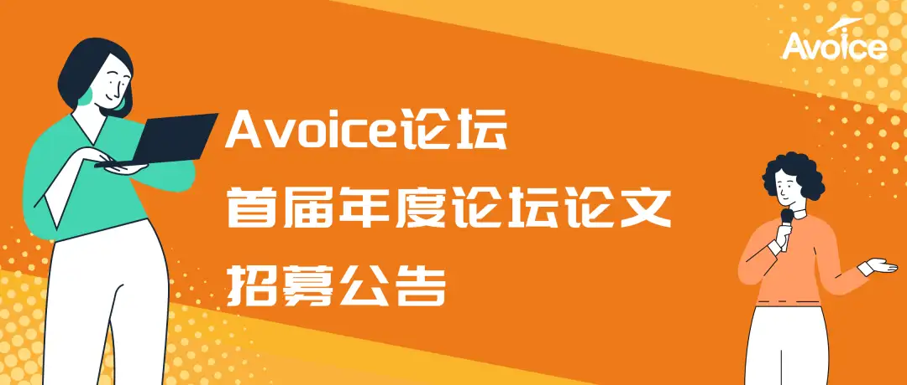

PART 1
Avoice年度论坛
Avoice（Against Violence to Overseas Chinese Women Program）海外华人女性保护项目发起于2020年全球新冠疫情爆发初期，目标是为面临家暴威胁的海外华人女性建立一个广泛有效的反家暴救助网络，经过两年多的发展，项目已覆盖至欧洲全部国家和北美部分国家。
为了对过去两年的努力进行总结，对未来的发展做出更好的规划，Avoice计划举办年度论坛，论坛分为【嘉宾分享】、【圆桌论坛】、与【论文评议】三个部分，此公告为【论文评议】部分的论文与研究投稿招募。
关于Avoice年度论坛的更多详细信息，请您对我们的公众号保持关注，我们将会陆续向您介绍我们精彩的论坛议程与令人期待的重量级嘉宾！
PART 2
论文与研究招募
图片来源：freepik
1. 举办论文评议的目的
1. 展示Avoice学术水平与能力
2. 为Avoice成员提供参与学术活动的机会
3. 与更多相关领域的学者建立联系
2. 论文评议流程
1. Avoice年度论坛将专设2-2.5小时进行论文的评议与展示
2. 我们会在投稿中选出质量优秀的6篇投稿，每篇请大家做8分钟的讲解展示，邀请专业老师做5分钟左右点评和建议
3. 我们会在投稿中选出质量较高的投稿若干篇，进行在线的海报（poster）展示，大家可以在不同的会议房间里“穿梭”，观看展示者讲解自己的学术海报
3. 论文征稿对象
1. 本次论文征稿开放给
Avoice现任活跃成员
Avoice储备库及历届成员
经Avoice成员介绍的有参与意愿的朋友
2. 论文的审阅与评选会在质量相近时优先把评审与展示的机会分配给Avoice现任活跃成员，其次是Avoice储备库及历届成员，最后是经Avoice成员介绍的有参与意愿的朋友
4. 论文征稿主题
1. 任何与Avoice做过、正在做、或计划涉足的领域相关的主题，包括但不限于：
反性别暴力运动
海外亚裔女性保护
无暴力空间
女性领导力
2. 学科背景不限，我们尤其鼓励跨学科研究的投稿和参与，如：
科技+公益（女性网站论坛对公共领域构建支持与现状等）
政策+女性健康（医疗和社会保障视角下的女性健康等）
职场+教育（海外华人女性职场胜任力培养等）
法律+心理（暴露于家庭暴力环境中的儿童心理创伤与成年后犯罪概率等）
3. 论文主题与内容与Avoice愿景“为女性创造爱与平等的世界”和价值观“参与、包容、赋能”相符
5. 论文评议老师
我们将邀请Avoice专家库里的嘉宾以及社会上关注女性权益领域的知名老师为大家进行论文评议
6. 论文与研究评选条件
1. 中英文不限；其他语言请单独联系学术处咨询：[email protected]
2. 立意明确，主题鲜明，论据充分，条理清晰，语言精炼
3. 符合文体规范，内容包括标题、作者姓名、内容摘要、关键词、正文、参考文献等部分
4. 建议中文不超过15000字，英文不超过8000词
5. 论文要体现原创性，不得抄袭，不得侵犯他人的合法权益
6. 不接受已公开发表的论文投稿
7. 本次会议鼓励对会议主题有强烈兴趣或想法、尤其是暂未参与过正式学术论坛的作者积极参与，欢迎实验研究、文献综述、系统综述、元分析等各类投稿，促进学术交流与繁荣；我们也欢迎暂时没有完整研究成果的同学提交和分享高质量的研究计划、正在进行中的研究、学期作业或小论文
7. 投稿途径与截止日期
1. 请通过扫描下方二维码或点击文末“阅读原文”进行投稿：
2. 优先截止日期：北京时间2022年12月11日23:59（在此之前投稿均会被审阅）
3. 最终截止日期：北京时间2022年12月18日23:59（在优先截止日期后，在此之前投稿，会根据评议老师的时间安排审阅，不能保证一定会被审阅）
4. 投稿通告将于北京时间2022年12月18日23:59关闭
PART 3
论坛与论文评议观众参与途径
本次论坛的所有环节都会以线上会议的形式开放给公众参与。请关注Avoice微信公众号的后续推文，获取参与渠道与参与方式，我们十分期待您的加入！
PART 4
联系方式
如遇任何问题，请联系：
Avoice学术处邮箱：[email protected]
招募公告撰写人 I 李雨桐 & 高天月
排版 & 封面制作 I Lucia